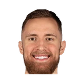

“It is a great honor for me and my family to represent the country where my mother was born. It is an honor that fills my heart with immeasurable joy, my dream since childhood. I can’t wait for the moment when I will share the basketball court with my teammates from the national team and do my best for coach Addis, the coaching staff and Bosnia and Herzegovina,”
What NBA players and coaches have said about Bosnia and Herzegovina
3 quotes about Bosnia and Herzegovina from 3 players, coaches and executives, newest first. Each one links to its original source.
Quotes per season
Who talks about Bosnia and Herzegovina most
- Adam Hanga1 quote

Dzanan Musa1 quote Luka Garza1 quote
Luka Garza1 quote
2022-23
2 quotesAdam Hanga revealed that he probably played his last game in the tournament.
“Even before the time I missed, there was a moment when I pulled my hamstring again. I didn't play the last game against Slovenia because I pulled it against Bosnia [and Herzegovina] and we were trying to recover for this game,”
Adam Hanga on Bosnia and HerzegovinaBasketNews
2018-19
1 quoteMore from @Dzanan Musa on Radio Sarajevo:
“I’m thinking all day about the irony that I’m signing my first NBA contract on this day. “I sympathize with my Bosnia and Herzegovina and I do not plan to celebrate this day, because of Srebrenica and the tragedy that struck my people.”
Dzanan Musa on Bosnia and HerzegovinaTwitter @NetsDaily